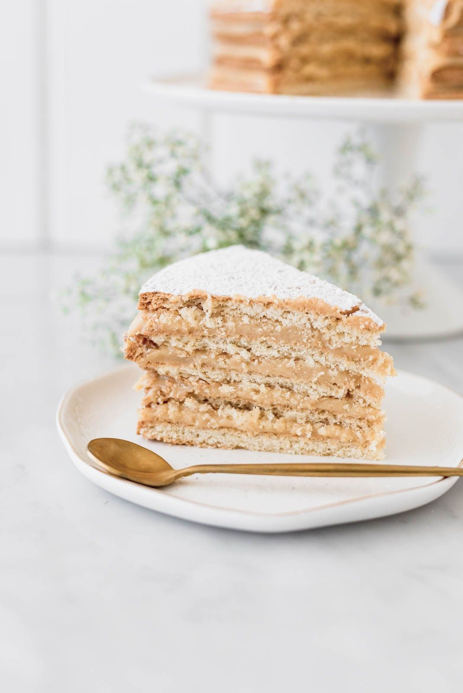

Alfajor Cake ("Torta de Alfajor")

Description
Alfajor cake is made with layers of shortbread-like cookies and
dulce de leche cream - simply delicious! Serves 8.
Ingredients
- 6 tablespoons unsalted butter, softened
- ⅓ cup white sugar
- 2 large eggs
- 2 ½ cups all-purpose flour, plus more for dusting
- ½ cup cornstarch
- 1 teaspoon baking powder
- ½ teaspoon kosher salt
- ½ cup whole milk
- 1 (13.4 ounce) can dulce de leche
- ½ cup heavy whipping cream
- ¼ cup powdered sugar, or as needed
Steps
-
Beat butter with a stand mixer fitted with a paddle attachment on
medium speed until creamy, about 2 minutes. Add sugar and beat until
light and fluffy, scraping down the sides of bowl as needed, about
2 minutes. Add eggs, 1 at a time, beating until incorporated after
each addition, about 30 seconds.
-
Whisk together flour, cornstarch, baking powder, and salt in a
medium bowl until combined. Add flour mixture to butter mixture
in 3 additions, alternating alternately with the milk, starting
and ending with the flour mixture, and beat until combined after
each addition.
-
Turn dough out onto a floured work surface and turn to coat dough.
Knead dough 2 or 3 times. Divide dough into 5 equal pieces and shape
each piece into a ball. Working with 1 ball at a time, roll dough
into a 7-inch circle. Place dough circles on 2 large rimmed baking
sheets lined with parchment paper (I fit 3 circles on 1 sheet and
2 on the other). Chill dough circles, uncovered, for 1 hour.
-
Preheat oven to 375 degrees F (190 degrees C). Prick each dough
circle lightly with a fork.
-
Bake in the preheated oven until browned on bottom and light browned
around the edges, 15 to 18 minutes. (If baking in 2 batches, keep
second batch refrigerated while first batch bakes.) Cool cake layers
completely on a wire rack, about 30 minutes.
-
Spoon dulce de leche into a medium bowl. Beat cream with an electric
mixer on medium-high speed until stiff peaks form, about 6 minutes.
Gently stir half of cream mixture into dulce de leche until combined.
Gently fold remaining cream into dulce de leche mixture until combined.
-
Spread 1/3 cup of the dulce de leche mixture onto 1 cake layer, spreading
to edges. Place onto a serving platter with dulce de leche mixture
facing up. Repeat process with the next 3 cake layers (this is easier
to spread on cake layers before placing on platter). Spread remaining
2/3 cup dulce de leche mixture onto fifth cake layer and place on top.
Let stand 1 hour. Dust top of cake with powdered sugar and serve.
Cover any leftovers with plastic wrap and store in refrigerator up to 1 day.